1965
Academic Quadrangle
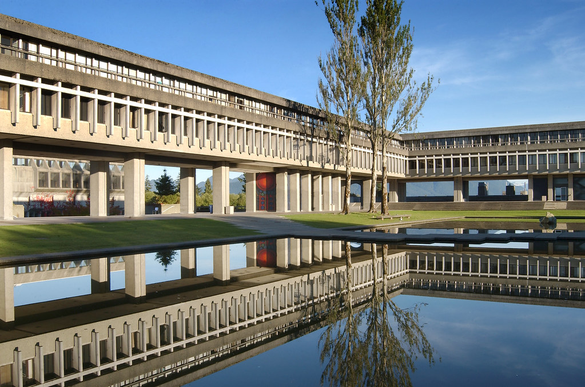Convocation Mall
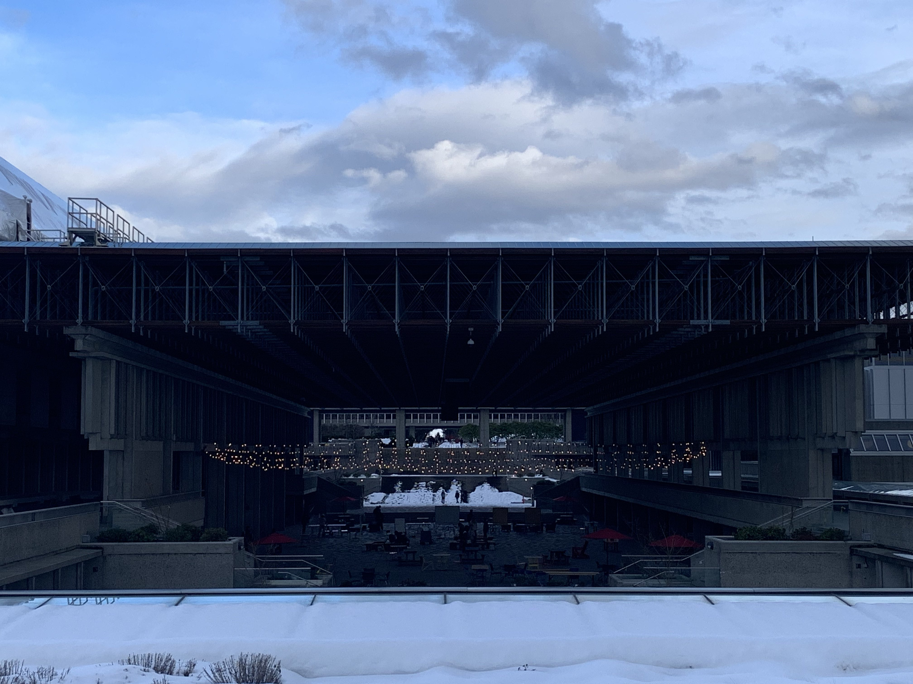Leslie and Gordon Diamond Family Auditorium
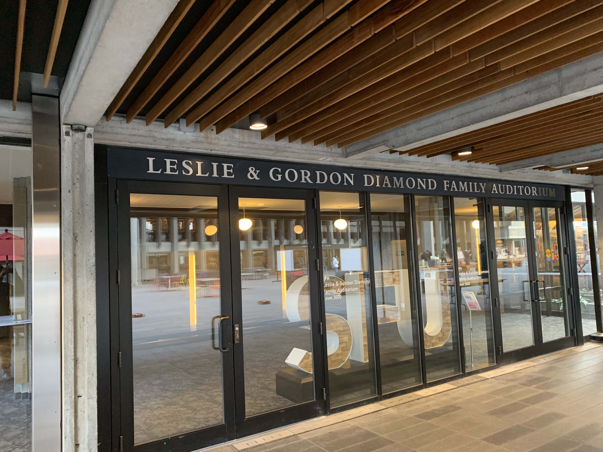Lorne Davies Complex
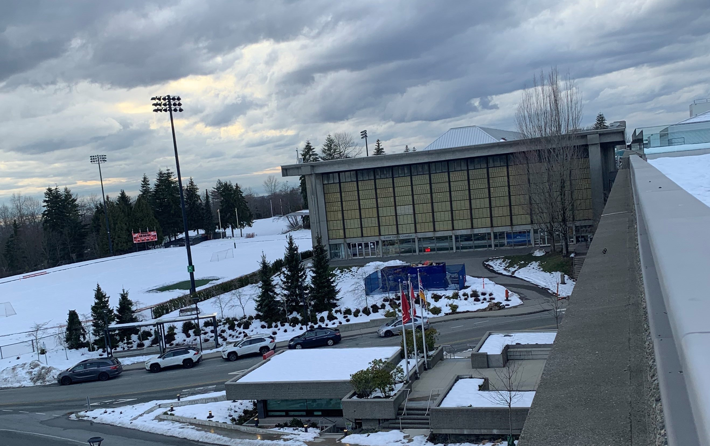Shrum Science Centre Biology

Shrum Science Centre Chemistry
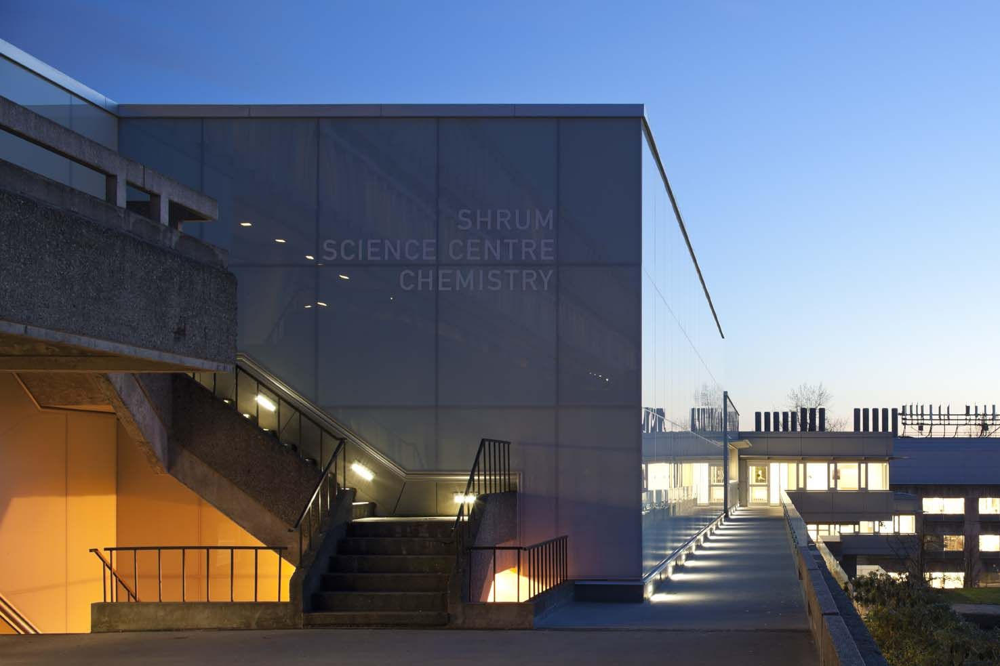Transportation Centre
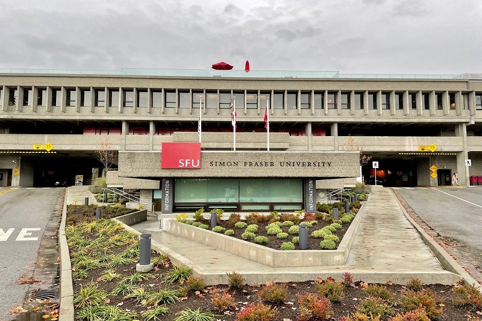W.A.C Bennett Library

Water Tower
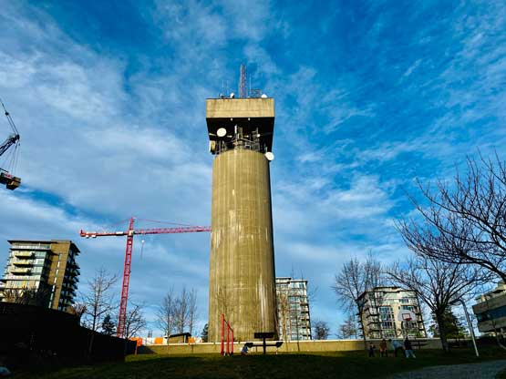1970
1971
Strand Hall
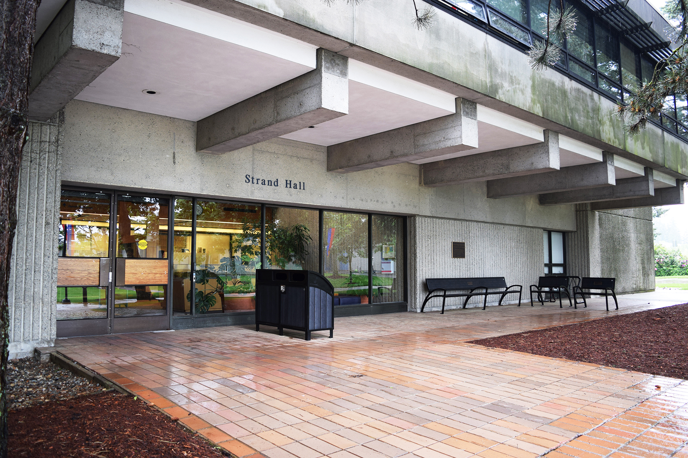1973
Maggie Benson Centre
1978
Education building
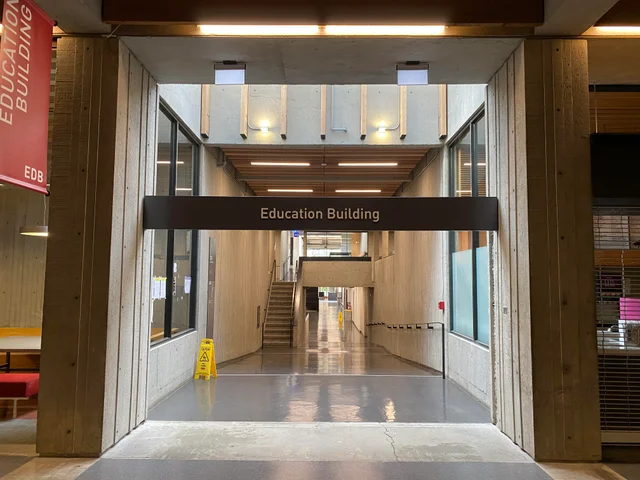1980
Shrum Science Centre Kinesiology
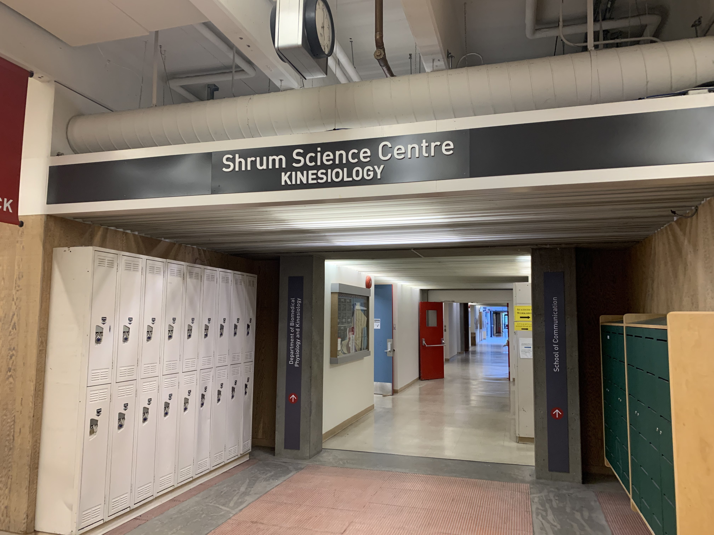1982
Discovery 1 (FIC)
1989
Applied Sciences Building
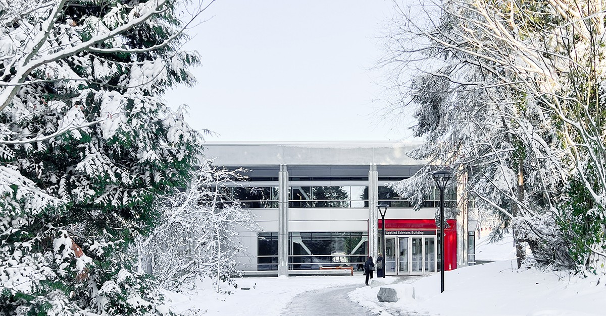Halpern Centre
1991
East Theatre Annex
1992
Discovery 2 (FIC)
South Sciences Building
West Parkade
1994
Transit Loop Building
West Mall Centre
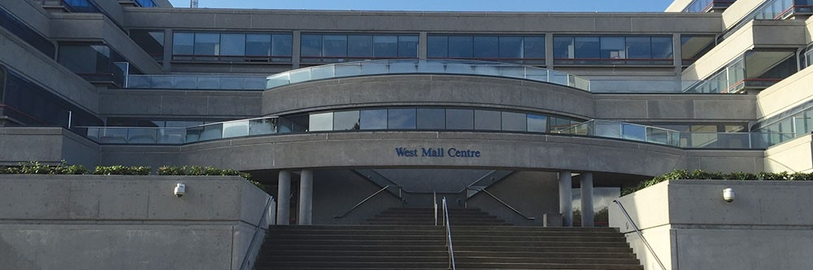2005
Technology & Science Complex 1

2006
Technology & Science Complex 2
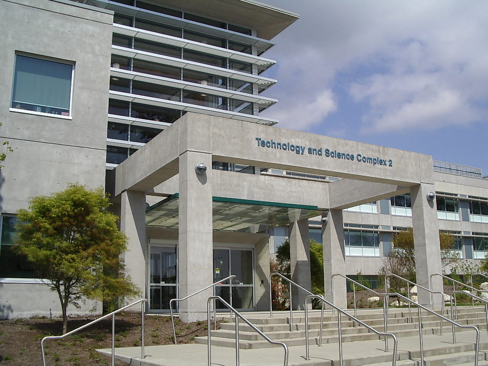2007
Saywell Hall
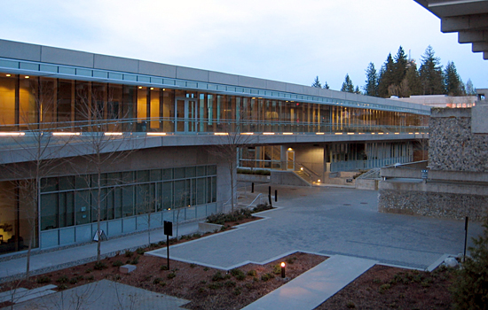2008
Blusson Hall
Cornerstone Building
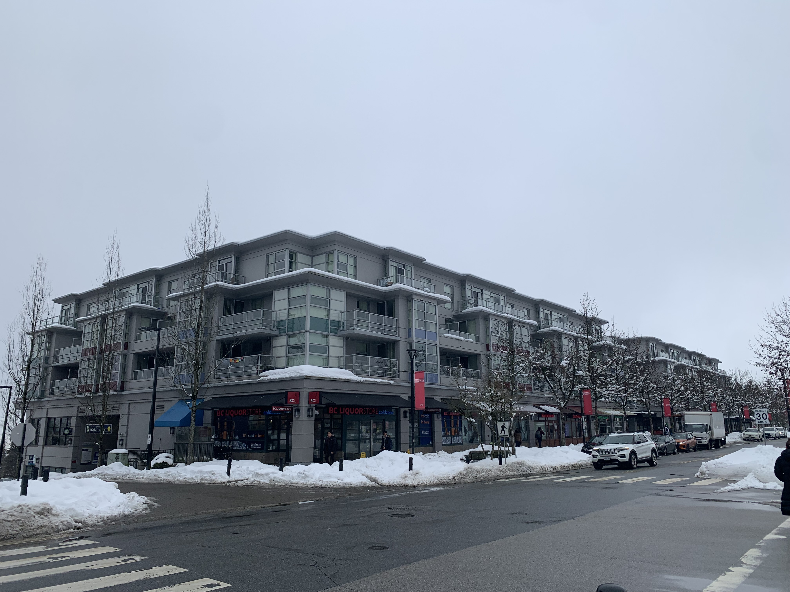The Water Tower Building
2012
Winter Operations Building
2015
Trottier Observatory